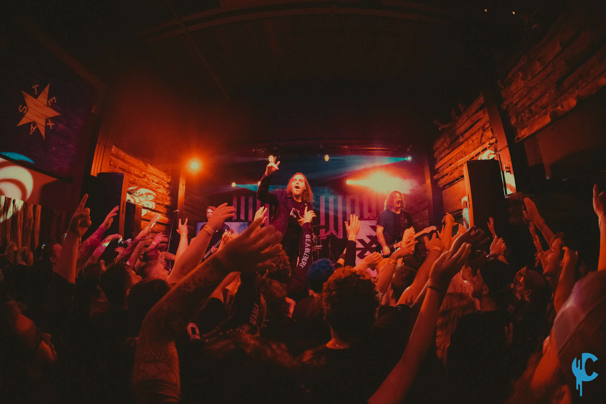

How It Came to Be
In the 2000s, bands began to draw inspiration from different metal genres and mix them with hardcore elements, leading to the creation of Metalcore. This genre blends various styles, often incorporating 7-string guitars, scratchy vocals, growls, melodic singing, and heavy instrumentals mixed with occasional melodic or electronic elements. Popular bands in this genre include Trivium, Killswitch Engage, and Avenged Sevenfold, among others.
Clothes Worn & Culture
This genre did not initially have a specific style, and most bands wore average clothes. However, sometime in the 2000s, Metalcore began to attract many people from the Emo subgenre. As a result, many fans and bands started to adopt the Emo style, characterized by skinny black jeans, band t-shirts, swoopy bangs, heavy eyeliner, and similar fashion elements.
Fun Facts

Due to the influx of Emo individuals into Metalcore, the genre became increasingly popular among teenagers, bringing it closer to mainstream acceptance than any other metal subgenre at the time. As a result, many traditional metal fans looked down upon Metalcore, feeling it was becoming too commercialized. The genre also gained the label "Screamo" because of the scratchy vocals commonly used in many songs. Even today, some people still use the term "Screamo" to describe any music with heavy, screamed vocals, regardless of the actual genre.